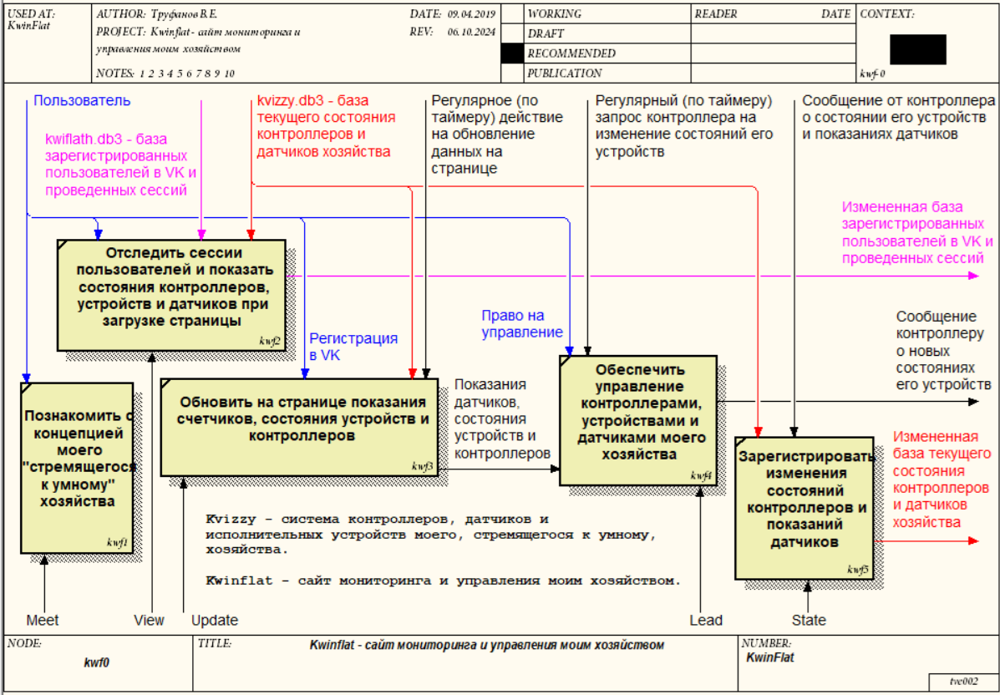

Страница мониторинга “View” и два сервера: “Lead” - управления, “State” - регистрации изменений состояния умного хозяйства и значений датчиков. Ознакомительная (домашняя) страница - “Meet”.
View - cтраница мониторинга запускается после регистрацию в обществе “VK”. Сессии пользователей регистрируются в SQLite3-базе данных kwiflath.db3.
State - сервер регистрации изменений состояния доступен лишь контроллерам умного хозяйства. Все изменения регистрируются в SQLite3-базе данных kvizzy.db3.
Структура каталогов:
/ - корневая страница с index.php и iniWorkSpace.php (диспетчер страниц);
/Meet40 - домашняя страница v4.x.x;
/Update40 - главная страница администратора;
/View40 - гостевая страница сайта;
/State40 - страница приема и передачи данных в базу;
/Lead40 - страница выявления команд управления умным хозяйством
/Stream40 - страница регистрации потока изображенийа) для подключения к системе хозяйства контроллер выполняет пинг сервера и отправляет сообщение серверу State о своем включении в систему, а также передает сведения о текущем состоянии своих устройств и показания датчиков в JSON-формате;
б) State40 принимает от контроллера изменения состояния умного хозяйства, значений датчиков и заносит данные в базу kvizzy40.db3;
в) контроллер регулярно запрашивает команды управления через страницу Lead;